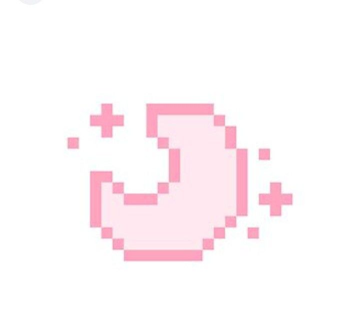
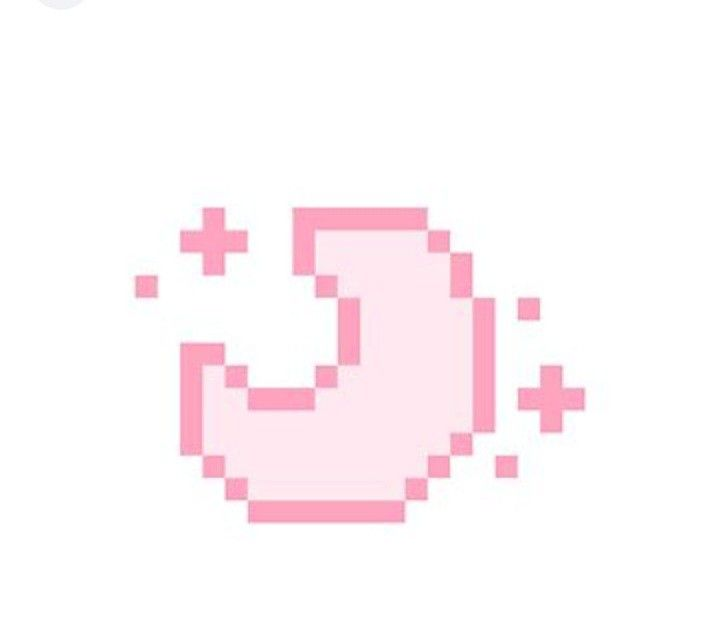

ABOUT ME!♡
Hello!! my name is Haru/Ruthie
I prefer female pronouns(she/her) but you can use any pronouns, I'm also bisexual.
My birthday is at 10/7(October 7)
LIKES/INTERESTS!♡
Unicorns(I know I'm childish), playing roblox, talking to new people, kinda being cringe, drawing,
occassionally sewing, arts from my friends,
decorating my room, coding, learning new stuff, and lastly the feeling of appreciation^_^!
DISLIKES/UNINTERESTS!♡
Overly cringy people, getting told to do something I don't wanna do,
school air, forced to do something, and lastly, the feeling of failure.
PERSONALITY!♡ (based from my perspective)
Approachable, sometimes rude, good at acting, overdramatic, kinda sensitive, sometimes act niave or oblivious,
get attached too easily, sometimes obsessed over someone, sometimes quiet, I laugh too easily.
FAVORITES!♡
listening to spotify or songs that I like, my irl friends!!(specifically Shishi, Ashe, Bree, and Vincent),
my online friends! (specifically Zen, Amona, and Kinji), my sketchbook, hair clips,
my laptop, and lastly, my plushies
EXTRAS!♡
My zodiac sign is a libra, I have a romantic feeling about Vincent,
I don't really like sharing my socials, and I usually sleep for a long period
THAT'S ALL!!

 
